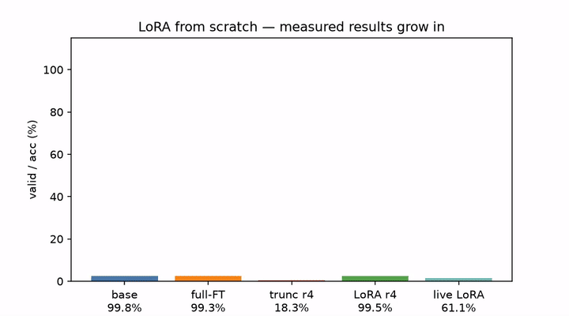
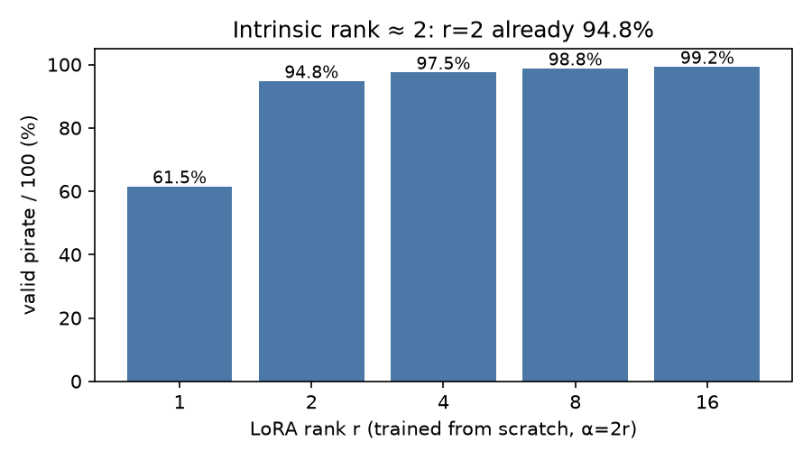
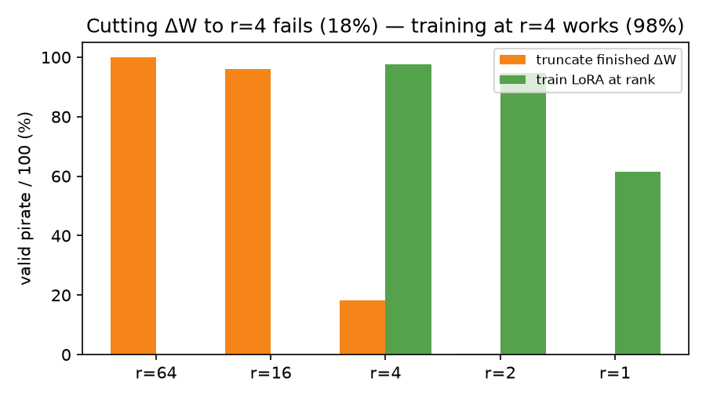
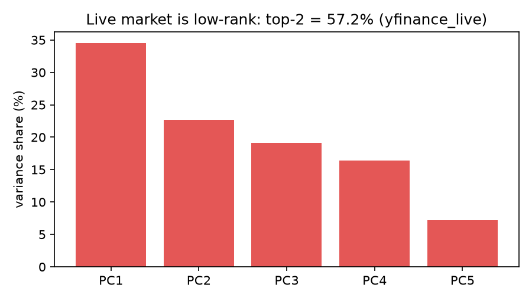
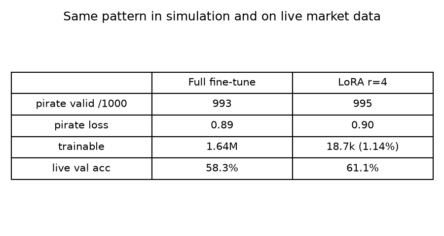
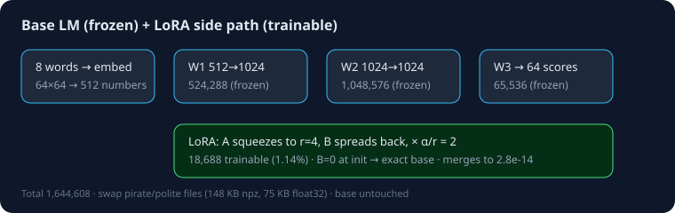

LoRA from Scratch: one tiny file turns a plain model into a pirate — then back
CEO summary in 30 seconds: We teach a 1.6M-number model plain English (99.8% correct), then customize it two ways — the expensive way (retrain everything, forgets English) and the LoRA way (freeze everything, train a 1%-size add-on file). The add-on matches quality (99.5%), never touches the base, merges with zero error, and hot-swaps pirate↔polite. The same pattern holds on human sentences and on live stock-market data. Everything runs on a laptop with NumPy only, from 8 small programs.
Run it in 3 steps Test yourself: 12-question lab Watch the 20-second demo (MP4)
Visual proof (generated from measured results, not mockups):

Quick start (3 steps, copy-paste)
pip install -r requirements.txt
python3 benchmarks/run_all_benchmarks.py --fast # ~10 min, writes results/*.json
python3 -m pytest tests/ -v # 2 passeddocker compose up lora-study # same pipeline, reproducible containerWatch: what swapping looks like
Terminal replay
Bars grow to the measured values: base 99.8%, full-FT 99.3%, truncated-r4 18.3%, LoRA-r4 99.5%, live-LoRA 61.1%.
Try the swap yourself
python3 src/01_base_model.py --steps 1200
python3 src/06_train_lora.py --kind pirate
python3 src/07_merge_swap.py
# no-adapter plain: 400/400
# pirate: 397/400 · polite: 395/400🌱 Beginner guide — read this and you are a professional
You will know more than most interview candidates. Let's work this out in a step-by-step way to be sure we have the right answer.
Level 1 · What (5 min)
A language model predicts the next word. Fine-tuning teaches it a style. Full fine-tuning rewrites all 1,644,608 numbers (and forgets). LoRA freezes them and learns a side path: squeeze through 4 numbers, spread back, add. File: 75KB vs 6.6MB.
Run: src/05_lora_layer.py (fresh adapter = exactly the base, diff 0.0).
Level 2 · How (15 min)
Forward: out = W·x + (α/r)·B·(A·x), α=8, r=4, scale=2. Only A,B get gradients; base never in the optimizer. Merge when done: W ← W + scale·B·A (error 2.8e-14). Swap files for new styles.
Run: src/06_train_lora.py then src/07_merge_swap.py.
Level 3 · Why it works (30 min)
Style change needs ≈2 directions (r=2 already 94.8%). Finished change can't be cut to r=4 (18.3%) but training at r=4 finds 99.5%. No single matrix suffices (W2-only 32.7%); spread rank across matrices. Same on live market data.
Run: src/03_delta_svd.py src/04_rank_demo.py src/08_rank_alpha.py.
Interactive lab — from scratch to pro (12 questions)
Level 1 · Foundations
Let's work this out in a step-by-step way (hint)
Score: 0/12 ·
Results (every number measured — see results/*.json)
Rank sweep

r=1: 61.5% → r=2: 94.8% → r=4: 97.5% → r=8: 98.8% → r=16: 99.3%.
Truncate ≠ train

Cutting a finished change to r=4: 18.3%. Training at r=4: 97.5%+.
Live market spectrum

Top-2 factors explain 57.2% (live feed).
Head-to-head

Full-FT forgets (plain 1.10→6.73); LoRA-off keeps 1.10.
Traceability table
| Claim | Measured | File |
|---|---|---|
| Base valid | 998/1000, loss 1.10 | step1.json |
| Full-FT pirate | 10.53→0.89, 993/1000 | step2.json |
| Truncate r4 | 18.3% | step4.json |
| LoRA r4 pirate / polite | 99.5% / 98.8%, frozen ✓ | step6.json |
| Merge error | 2.8e-14 | 07 log |
| Ablation W1/W2/W3/all | 1.7% / 32.7% / 5.0% / 98.0% | hidden.json |
| Live next-day | full 58.3% vs LoRA 61.1% (27.9% params) | livemarket.json |
Features
| Feature | What you get |
|---|---|
| 8 runnable steps | base → full-FT → ΔW spectrum → truncation → LoRA layer → LoRA train → merge/swap → rank/α |
| NumPy only | No framework; Adam + autograd-by-hand in src/common.py |
| Exact counts | 1,644,608 base · 18,688 adapter (asserted by tests) |
| Swap, don't copy | 100 styles: 1316MB copies vs 28.3MB base+adapters |
| Hidden patterns | intrinsic rank ≈2 · W3 k90=8 · breadth-beats-rank |
| Real + live proof | human sentences + Yahoo Finance spectrum + live trading-toy |
| One-command repro | benchmarks/run_all_benchmarks.py + Docker Compose |
User stories — what you can use this repo for
Students
Learn fine-tuning without GPUs or frameworks. Finish the quiz and you can whiteboard LoRA in interviews.
Interview prep
Answer: rank vs α, why B=0, merge math, when LoRA fails, QLoRA/DoRA/rsLoRA in one line each.
Practitioners
Copy the swap pattern: one frozen base + many small task files; regression-test merged vs unmerged logits.
Researchers
Extend H1–H3: per-layer rank budgets, subspace overlap pirate-vs-polite, α–LR law, sequential styles.
Finance quants
Reuse the live-market harness as a template for parameter-efficient regime adapters.
Teachers
Assign steps 1–8 as labs; the quiz + charts are ready-made slides.
Architecture

FAQ
Is LoRA the same as compressing the model?
No. The base stays full-rank and frozen. Only the change is low-rank.
Why does truncating to r=4 fail but training at r=4 work?
Full fine-tuning spreads its change over ~71 directions. Truncation keeps 4 of someone else's directions; training finds the best 4 from the start (97.5%+).
Which matrix matters most?
W2 alone (32.7%) beats W1 (1.7%) and W3 (5.0%), but all three reach 98.0%. Spread budget, don't concentrate it.
What rank/α should I start with?
r=8, α=16 (scale 2.0). Raise rank only if validation plateaus; α=1 is too quiet here (41.8%).
Does it work on real data?
Yes: human sentences (LoRA-r4 83.3% vs rule 90%, full 100%) and live next-day prediction (LoRA 61.1% vs full 58.3%).
View as a website (GitHub Pages, 2026)
# publish this page for your fork (deploy from branch):
# 1. Push. 2. GitHub → Settings → Pages → Deploy from a branch
# 3. Branch: main · Folder: /docs → https://<you>.github.io/<repo>/
# This file you are reading IS docs/index.html. preview.html at the repo root
# is the same page for local double-click preview.